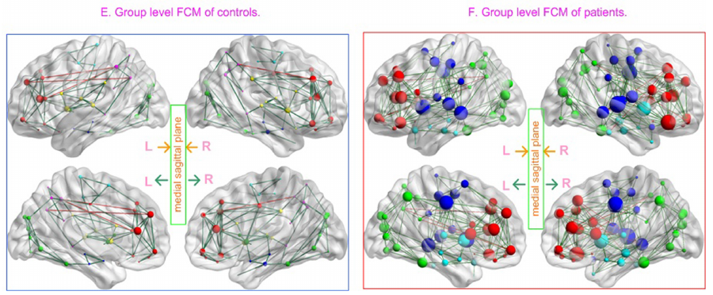
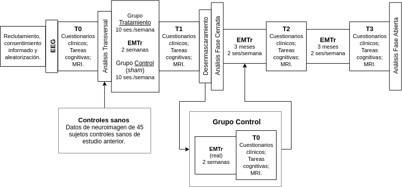
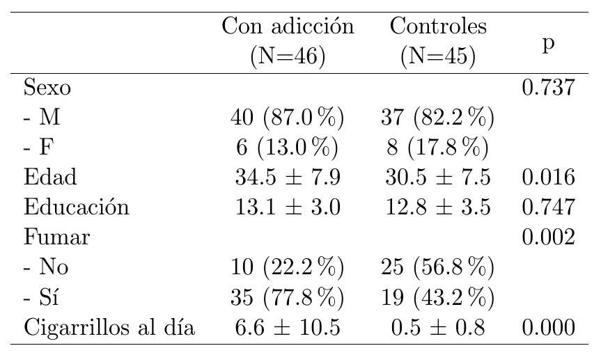
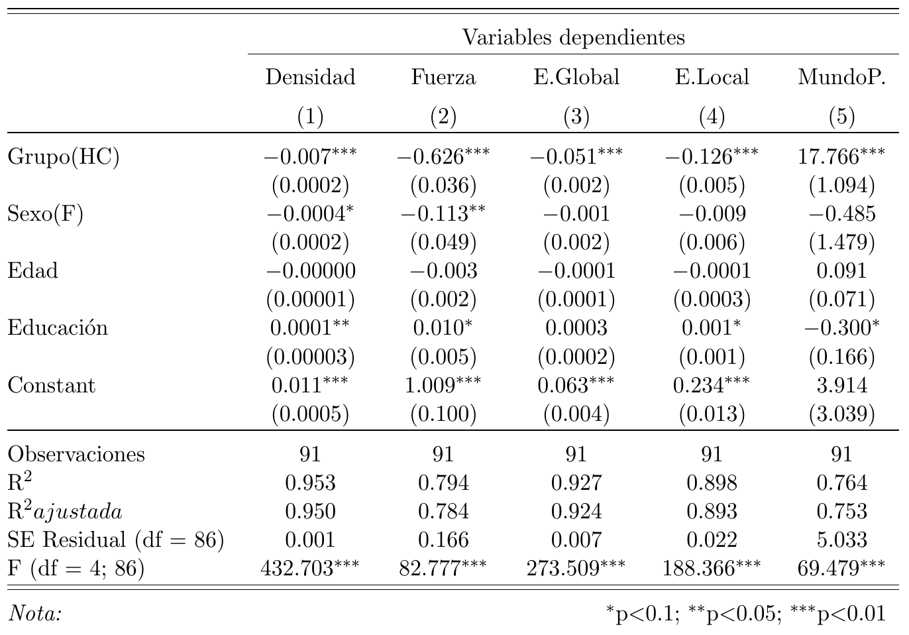
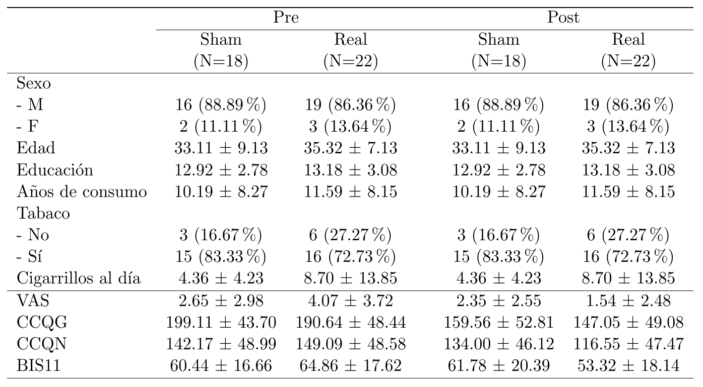
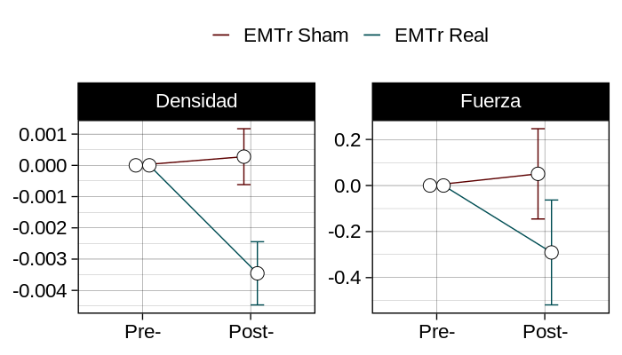
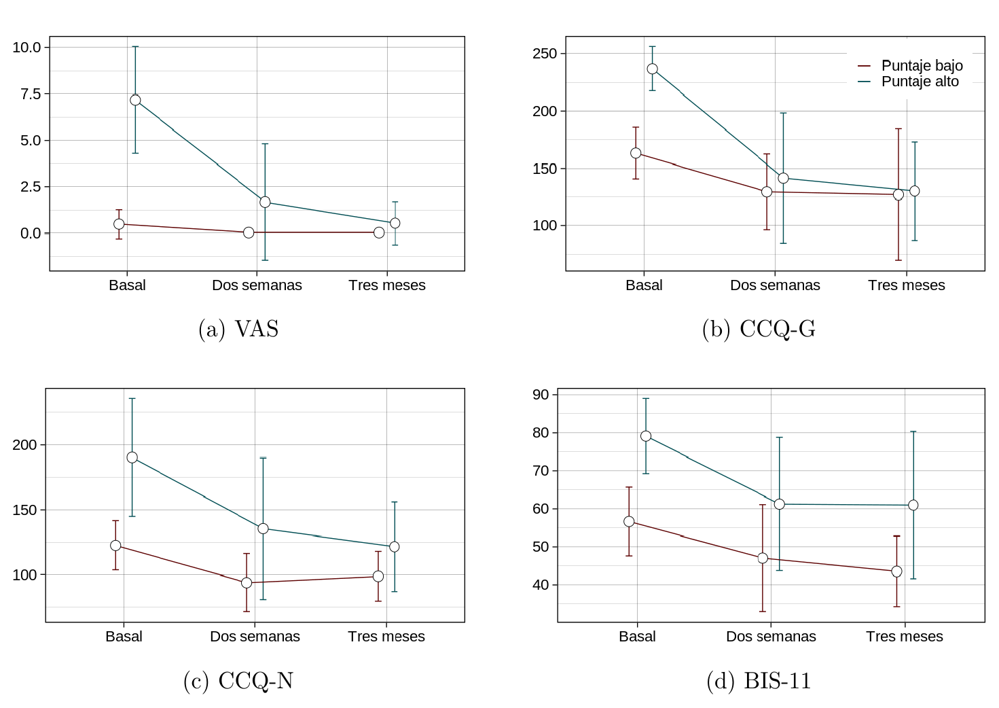
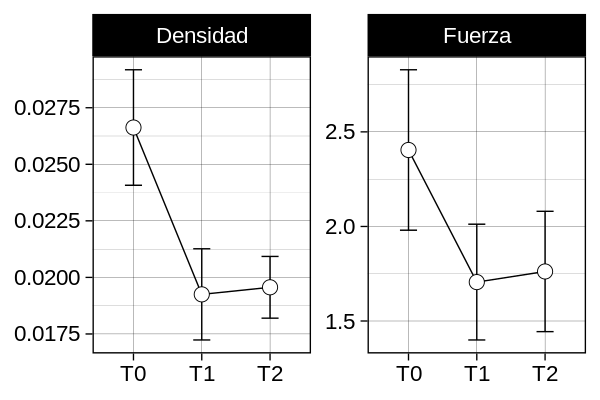

Maestría en Ciencias - Neurobiología
Examen de Grado
Sofía Fernández Lozano
Conectividad cerebral en pacientes adictos a cocaína después de tratamiento con estimulación magnética transcraneal repetitiva
Adicción
Síndrome neurobiológico compuesto por conductas impulsivas y compulsivas
y caracterizado por:
- Compulsión en buscar y consumir la sustancia
- Pérdida de control limitando el consumo
- Emergencia de un estado emocional y motivacional negativo
Estadística de uso
Alcohol: 33.6%
Tabaco: 17.6%
Drogas ilícitas: 9.9%
Marihuana: 8.6%
Cocaína: 3.5%
Modelo de adicción:
Neurotransmisores específicos:
Dopamine
Regiones específicas:
Corteza frontal; Estriado
Mejor entendimiento de la condición: organización topológica y redes de conectividad
Tratamiento
El tratamiento óptimo es un abordaje multidisciplinario (psicoterapia, consejería y farmacología).
No es efectivo:
Tasas de abstinencia:
40-60%
Es necesario buscar nuevos tratamientos
Estimulación Magnética Transcraneal

Permite modular la excitabilidad cortical por medio de pulsos electromagnéticos localizados que pasan por la piel y el cráneo
EMTr en adicción
Investigaciones recientes apoyan el uso de EMTr sobre la corteza prefrontal para reducir el craving de tabaco, alcohol y cocaína
- La corteza prefrontal dorsolateral está conectada al sistema dopaminérgico meso-fronto-límbico
- EMTr puede inducir liberación dopaminérgica en áreas corticales y subcorticales
- Corteza prefrontal está involucrada en procesos de toma de decisiones, los cuales pueden estar alterados en pacientes con adicciones
EMTr en cocaína
| n | Área | Parámetros | Control | Resultados | |
|---|---|---|---|---|---|
| Camprodon et al., 2007 | 6 | DLPFC bilat. | 2 sesiones, 10 Hz | NA | Reducción en craving |
| Politi et al., 2008 | 36 | DLPFC izq. | 10 sesiones, 15 Hz | NA | Reducción en craving |
| Hanlon et al., 2015 | 11 | MPFC izq. | Theta-burst /fMRI | Sham | Reducción en craving |
| Terraneo et al., 2016 | 32 | DLPFC izq. | 8 sesiones, 15 Hz | Tx farmacológico | Reducción en craving |
| Rapinesi et al., 2016 | 7 | DLPFC bilat. | H1, 12 sesiones, 20 Hz | NA | Reducción en craving |
| Bolloni et al., 2016 | 10 | DLPFC bilat. | H1, 12 sesiones, 20 Hz | Sham | Reducción en craving |
| Kearney-Ramos et al., 2018 | 25 | MPFC izq. | Theta-burst /fMRI | Sham | Reducción en craving |
Resonancia Magnética
La imagenología por resonancia magnética (MRI) es el pilar de la investigación con neuroimagen en adicción debido a su seguridad, ausencia de radioactividad y flexibilidad de información obtenida

Resonancia Magnética funcional
La resonancia magnética funcional (fMRI) es una modalidad de la MRI donde se mide la actividad cerebral por medio del contraste endógeno del nivel dependiente de oxigenación de la sangre (BOLD)
Conectividad funcional
Actividad neurofisiológica que se da de manera relativamente sincronizada en distintas regiones cerebrales

Estos datos de conectividad pueden estudiarse como redes de regiones cerebrales conectadas por asociaciones funcionales; son indudablemente complejas, comparten características con otras redes biológicas y sistemas físicos y, por lo tanto, pueden ser categorizadas usando metodos de redes complejas
Ciencia de redes
Esfuerzo interdisciplinario de caracterizar las propiedades importantes de los sistemas complejos por medio de la cuantificación de las topologías de sus respectivas representaciones en redes.
Estos análisis permiten cuantificar con confiabilidad las redes cerebrales con un pequeño número de medidas fácilmente computables y neurobiológicamente significativas.
Wang et al., 2015
Planteamiento de problema
Pregunta de investigación
¿Existen cambios clínicos y en la topología de redes de conectividad funcional en pacientes con adicción a la cocaína después de un tratamiento de estimulación magnética transcraneal repetitiva a corto y largo plazo?
Hipótesis
Topológicas
- Los pacientes con adicción presentarán mayor hiperconectividad (fuerza y densidad) en sus redes de conectividad que los controles.
- Las redes de conectividad en pacientes adictos presentarán menores índices de eficiencia (escalar de mundo pequeño y eficiencias global y local) que las de los controles.
clínicas
- Habrá una mayor disminución en el craving a las dos semanas, tres y seis meses en comparación con la medición basal en los sujetos que llevaron un tratamiento real de emtr que en los del grupo sham.
- Habrá una mayor disminución en la medida de impulsividad a las dos semanas, tres y seis meses en comparación con la medición basal en los sujetos que llevaron un tratamiento real de emtr que en los del grupo sham.
EMTr
- La conectividad de la red disminuirá con el tratamiento real de EMTr en comparación con sham.
- La eficiencia de la red aumentará con el tratamiento real de EMTr en comparación con sham.
Sujetos, material y métodos
Estudio mono-céntrico doble-ciego controlado por placebo y de grupos paralelos, llevado a cabo en su totalidad en la Subdirección de Investigaciones Clínicas del INPRFM en la Ciudad de México.
Parte de un proyecto mayor financiado por CONACYT clave: S0008-2015-2-260971, y aprobado por el Comité de Ética del INPRFM (CEI/C/070/2016).
Diseño
Muestra
Tanto pacientes de la clínica de adicciones del INPRFM como externos que cumplieran con el diagnóstico de dependencia de cocaína (F14.2X) del DSM-5 fueron reclutados para participar en el ensayo clínico.
Una submuestra de sujetos sanos fue tomada de la base de datos de un proyecto anterior del INPRFM .
Criterios de selección
Criterios de inclusión
- Edad 18-50 años
- Usuario de cocaína (al menos dos años; uso promedio min. tres veces/semana; periodos de abstinencia menores a un mes por un año)
- Lectura a nivel sexto de primaria
- Consentimiento informado
- Diestro
- BMI menor o igual a 30
- Uso de anticonceptivo y no embarazo
Criterios de exclusión
- Antecedentes de trastornos neurológicos, neurocirugías o trauma craneoencefálico
- Esquirlas de metal o proyectiles metálicos en cabeza o cuerpo
- Uso de droga de investigación o medicamento proconvulsivante
- Presión intracraneal aumentada
- Historia de esquizofrenia, manía o hipomanía
- Historia de cardiopatía
- Tener potencial reproductivo y no utilizar anticoncepción
- Historia de convulsiones
- Dependencia actual a cualquier sustancia excepto cocaína y nicotina
- Claustrofobia
- Historia de infección por VIH
Criterios de eliminación
- Expresar deseo de dejar de participar
- Presentar hallazgos radiológicos anormales
- Aparición de síntomas psicóticos
- Presencia de elevación anormal de ánimo
Instrumentos
Craving
- CCQ-G
- CCQ-N
- VAS
- Linea de tiempo
Impulsividad
- BIS-11
Estimulación Magnética Transcraneal
- Magpro R-30 MagVenture;
bobina MCF-P-B70 (Forma 8) - DLPFC: 5cm anterior; 2cm lateral a M1
- Dos sesiones EMTr a 5 Hz;
intervalo 30 min - 50 trenes de 10s;
intervalo inter-tren 1 min; 100% MT - 5000 pulsos:
2500 pulsos, 58 min/sesión - Sham doble-ciego;
electrodo músculo frontal
Imagenes por Resonancia Magnética
Resonador Philips Ingenia 3T y antena de cráneo de 32 canales
Secuencia EPI T2*
- TR = 2s
- TE = 30ms
- Ángulo de inclinación: 75°
- 37 cortes de 3.33mm
- FOV = 240mm
- Matriz: 80x80
- Voxel: 3x3x3.33mm
Secuencia 3D T1w
- TR = 7ms
- TE = 3.5ms
- Ángulo de inclinación: 8°
- 180 cortes de 1mm
- FOV = 240mm
- Matriz: 240x240
- Voxel: 1x1x1mm
Manejo de datos
Los datos de MRI fueron organizados en BIDS y evaluados en su calidad con la herramienta MRIQC buscando artefactos de señal o movimiento
Los datos fueron preprocesados con las herramientas abiertas FMRIPREP y XCP siguiendo un procedimiento abierto que incluye:
- Extracción de cráneo
- Normalización a plantilla
- Segmentación de tejido
- Corrección de corte de tiempo
- Corrección de movimiento
- Corregistro de imagenes
- Regresión de ruido
- Censura por movimiento (0.5 mm)
Construcción de redes
Redes ponderadas no dirigidas fueron construidas a partir de la correlación de la señal BOLD de cada uno de los 264 nodos del atlas de Power
Auto-correlaciones y conexiones negativas fueron retiradas de las matrices y grafos
Para retirar conexiones espurias, se realizó un umbralizaje de consenso, donde solo permanecieron las conexiones que estuvieran en al menos el 50% de los integrantes de un grupo
Medidas topológicas
Una vez construidos los grafos finales, se extrajeron las siguientes medidas de topología para su comparación
- Grado
- Densidad
- Coeficiente de agrupamiento
- Longitud de camino característica
- Eficiencia local
- Eficiencia global
- Escalar de mundo pequeño
Pacientes vs Controles
Demográficos
Regresiones lineales múltiples
Fase Cerrada
Mediciones clínicas
Mediciones de topología
Fase abierta
(3 meses)
Clínicas
Topología
Fase abierta
(6 meses)
Clínicas
Topología
Conclusiones
Pacientes v Controles
- Diferencias significativas entre poblaciones:
- Hiperconectividad en cerebro adicto
- Mayor eficiencia en pacientes
- Menor cualidad de mundo pequeño
- Posiblemente debido a diferencias en metodología (redes binarias/ponderadas; umbralizaje)
Medida de mundo pequeño es relacionada a la eficiencia de comunicación
Comunicación inter-regional alterada en pacientes con adicción puede ser la base de la pérdida de control cognitivo e inhibición características de adicción
Fase cerrada
- Resultados clínicos son consistentes con estudios previos que demuestran mejoría en craving con EMTr sobre DLPFC
- Fortalecimiento de actividad neuronal prefrontal: apoyo a funciones ejecutivas y capacidad de control de impulsos
- Estimulación prefrontal puede influir en zonas estriatales por el circuito frontoaccumbal
Controlando por grupo experimental y niveles basales, la mejoría fue significativa en impulsividad y craving medido por VAS
Tratamiento de dos sesiones diarias por dos semanas de EMTr sobre DLPFC izquierda es clínicamente efectivo en la mejoría de craving e impulsividad en comparación con el tratamiento habitual
Medidas topológicas
- Reducción de costo (fuerza y densidad) y eficiencia global en pacientes que llevaron tratamiento real
- Eficiencia aumenta monotónicamente con costo de red
- Pacientes que llevaron tratamiento real mostraron un aumento en escalar de mundo pequeño
- No hubo relación significativa entre cambios topológicos y clínicos
Fase abierta
- No hay ningún estudio de EMTr que haya explorado efectos a largo plazo de mantenimiento
- Mejoría clínica se mantuvo constante con las sesiones de mantenimiento
- Ligero empeoramiento a los seis meses en comparación con medición anterior
(especialmente sujetos con niveles basales bajos) - Sujetos con niveles basales altos: empeoramiento fue menor en craving y nulo en impulsividad
- No encontramos patrón claro en cambios de topología
- Mantenimiento de efecto a los tres meses
- Efectos mayores en costo después de los tres meses y cambio de signo en escalar de mundo pequeño
Limitaciones y alcances
- Altas tasas de deserción
- Efectos clínicos no son generalizables en las distintas escalas utilizadas
- Frecuencia de estimulación relativamente baja (5 Hz)
- Efectos clínicos varín según características personales de participantes
- Primer estudio doble-ciego, con muestra mayor a 40 sujetos y exploración con neuroimagen
- Resultados defienden la idea de la EMTr como posible alternativa de tratamiento para dependencia a cocaína en sujetos donde el tratamiento habitual no es suficiente
Este trabajo deja las bases para continuar la exploración de la EMTr como tratamiento para la adicción y sus efectos a largo plazo; así como de la utilización de la metodología de ciencia de redes para el estudio de las bases biológicas de la adicción, su desarrollo y evolución